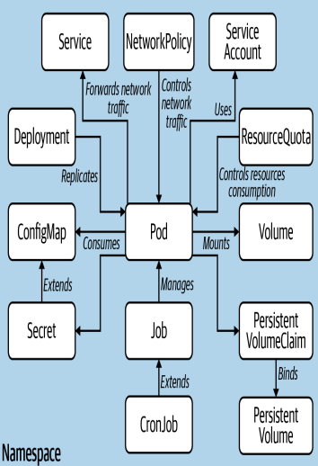

Kubernetes

1 Setup
1.1 Install helm
curl https://baltocdn.com/helm/signing.asc | gpg --dearmor | sudo tee /usr/share/keyrings/helm.gpg > /dev/null
sudo apt-get install apt-transport-https --yes
echo "deb [arch=$(dpkg --print-architecture) signed-by=/usr/share/keyrings/helm.gpg] https://baltocdn.com/helm/stable/debian/ all main" | sudo tee /etc/apt/sources.list.d/helm-stable-debian.list
sudo apt-get update
sudo apt-get install helm1.2 local dockerhub
Prelude: Setting up docker “registry” server so we can push custom containers and pull it into kubernetes pods.
sudo docker run -d -p 8444:5000 --name registry registry:2sudo docker build . -t localhost:8444/demo
sudo docker push localhost:8444/demodocker uses “stop”, to stop containers but kubectl uses “delete” to stop pods/deployments/services
2 Cheatsheet
Production steps:
- Apply Deployment
- Apply ClusterIP Service
- Apply LoadBalancer(Ingress) Service
- Pod < Node < Cluster
- 1 Docker container = 1 Kube Pod
- 1 Kube Node = 1 computer
- 1 Docker container = 1 Kube Pod
- services -
kubectl get services -o wide- ClusterIP - internal service that lets pods talk to each other
- LoadBalancer - (ingress) service that lets us face the internet
- NodePort
- deployments -
kubectl get deployments -o wide- The essence of kubernetes aka build pods/run pods/autorestarts pods
- Running deployments is like running Pods on steroids. (running pods is same as running docker containers)
kubectl apply -f https://raw.githubusercontent.com/kubernetes-hy/material-example/master/app1/manifests/deployment.yaml
kubectl describe hashgenerator-dep
kubectl {get/apply/delete} {all/pods/nodes/services/deployments} {NAME_or_yaml_file}
kubectl get pods -o wide #similar to docker ps -akubectl describe {NAME}2.1 kubectl get/delete pods/services/deployments
2.1.1 Pods
kubectl get pods
# NAME READY STATUS RESTARTS AGE
# hello-world-699cdf74dc-4dnts 1/1 Running 0 2d2h
# superpod 0/1 ImagePullBackOff 0 32m
kubectl delete pods hello-world-699cdf74dc-4dnts2.1.2 Services
- ClusterIP (internal nodes), LoadBalancer (front facing internet), NodePort
kubectl get services
# NAME TYPE CLUSTER-IP EXTERNAL-IP PORT(S) AGE
# kubernetes ClusterIP 10.43.0.1 <none> 443/TCP 8d
# my-service LoadBalancer 10.43.73.29 192.168.1.244 8080:32447/TCP 2d3h
kubectl delete service my-service2.1.3 Deployments
kubectl get deployments
# NAME READY UP-TO-DATE AVAILABLE AGE
# hello-world 5/5 5 5 2d3h
kubectl delete deployment hello-worldDeleting deployment will properly terminate the pods.
3 Control Pane
kubectl cluster-info
# Kubernetes control plane is running at https://172.17.0.28:8443
# KubeDNS is running at https://172.17.0.28:8443/api/v1/namespaces/kube-system/services/kube-dns:dns/proxy
kubectl get nodes
# NAME STATUS ROLES AGE VERSION
# minikube Ready control-plane,master 108s v1.20.2kubectl describe node4 Concepts
4.1 Master node
Kubernetes controllers listed below are inside the master Node.
kube-controller-manager- the controller of controllers , it runs Node controllers, replication controllers, endpoint controllers, service acct & token controllerscloud-controller-manager- interacts with cloud providers like AWS, GCPkube-scheduler- watches for pods with no nodes assigned, so it will assign nodes to themkube-apiserver- exposes a rest API which is the only way to communicate with kubenetes clusters. You communicate by sending*.yamlrepresenting desired state via kubernetes CLIkubectlor some 3rd party dashboard.etcd- stores the state of the cluster. Only thekube-apiservercan talk withetcd
4.2 Worker node
kube-proxy- All network traffic travels thru here. It manages network rules on the node.kubelet- manage pod lifecycle to ensure containers described in the Pod spec are running/healthycontainer runtime
5 kubectl config Context
Context is a group of parameters that let you connect to a kube cluster.
It has the cluster name, user and namespace.
kubectl will send commands to the current AKA default context
kubectl config current-context #get current context
kubectl config get-contexts #list context
kubectl config use-context {context name} #set the current context
kubectl config delete-context {context name} #delete context from config file6 Namespaces
Used to group resources like : Dev,Test,Prod
Objects in one namespace can access objects in another namespace
kubectl get ns
kubectl apply ns {namespace name}
kubectl delete ns {namespace name}
kubectl get pods --all-namespaces #list all pods in all namespaces
kubectl config set-context --current --namespace={some namespace}7 Creating .yaml
*.yaml files can be used for basically all of kubernete’s features.
Install vs-code kubernetes extension.
Ctrl+Shift+P >>
8 Pods
- Pod States:
- Pending(Scheduled for creation)
- Running(Bound to a node)
- Succeeded(exited with status 0)
- Failed(All container exit )
- Unknown(communication error with pod)
- CrashLoopBackOff(crash loop)
apiVersion: v1
kind: Pod
metadata:
name: superpod
labels:
app: myapp
spec:
containers:
- name: myappcontainer
image: busybox
initContainers:
- name: init-myservices
image: busybox:1.28
command: ['sh','-c', "until nslookup mysvc.namespace.svc.cluster.local; do echo waiting for mysevice; sleep 2; done"]
- name: init-mydb
image: busybox:1.28
command: ['sh','-c',"until nslookup mydb.namespace.svc.cluster.local; do echo waiting for mydb; sleep 2; done"]kubectl describe pod superpod
kubectl get pod superpod -o yaml > mypod2.yaml # export pod into yaml file
kubectl exec -it superpod -- sh
kubectl delete -f mypod.yaml9 Running Pods with example
- Very similar to Docker containers
- Shouldnt run as pods, but instead run as deployments. (This section for demonstration purposes only)
var http = require('http');
var handleRequest = function(request, response) {
response.writeHead(200);
response.end("Hello World!");
}
var www = http.applyServer(handleRequest);
www.listen(8080);FROM node:12.22.12
EXPOSE 8080
COPY index.js .
CMD node index.jsapiVersion: v1
kind: Pod
metadata:
name: superpod
labels:
app: myapp
spec:
containers:
- name: myappcontainer
image: localhost:8444/demo
imagePullPolicy: Always
ports:
- containerPort: 8080kubectl delete pod superpod # if we already have one running
kubectl apply -f deploy.yaml #on creation kubectl will run it automatically
kubectl get pods -o wide
# NAME READY STATUS RESTARTS AGE IP NODE NOMINATED NODE READINESS GATES
# superpod 1/1 Running 0 102s 10.42.0.37 debian <none> <none>Since we exposed the port in mypod.yaml with - containerPort: 8080 we can
curl 10.42.0.37:8080 and see the api response.
kubectl exec -it superpod -- bash10 running Deployment
apiVersion: apps/v1
kind: Deployment
metadata:
name: myapp
spec:
selector:
matchLabels:
run: myapp
replicas: 2
template:
metadata:
labels:
run: myapp
spec:
containers:
- name: myapp
image: localhost:8444/demo
ports:
- containerPort: 8080kubectl delete deployments superpod
kubectl apply -f deploy1.yaml
kubectl get deployments -o wide
# NAME READY UP-TO-DATE AVAILABLE AGE CONTAINERS IMAGES SELECTOR
# myapp 2/2 2 2 3m27s myapp localhost:8444/demo run=myapp
kubectl get pods -o wide
# NAME READY STATUS RESTARTS AGE IP NODE NOMINATED NODE READINESS GATES
# myapp-5b84d97bb8-tnjmr 1/1 Running 0 6s 10.42.0.38 debian <none> <none>
# myapp-5b84d97bb8-v925s 1/1 Running 0 6s 10.42.0.39 debian <none> <none>Observe self-healing in action by deleting a pod and watch as it recovers.
Notice how when deploying as a kind: Deployment in deploy.yaml we get self-healing but kind: Pod is the other deploy.yaml in the previous section, we do not get self healing.
kubectl delete pod myapp-5b84d97bb8-tnjmr
kubectl get pods -o wide
# NAME READY STATUS RESTARTS AGE IP NODE NOMINATED NODE READINESS GATES
# myapp-5b84d97bb8-v925s 1/1 Running 0 6m24s 10.42.0.39 debian <none> <none>
# myapp-5b84d97bb8-v6zmj 1/1 Running 0 35s 10.42.0.40 debian <none> <none>10.1 Stopping a deployment
kubectl delete deployment myapp11 run deployment WITH service/loadbalancer
In the previous 2 sections, we used the deploy.yaml to reveal the 8080 port to the outside world. Problem is in deployment we have 2 IP addresses.
Services abstract these details so the outside world hits 1 endpoint which the service reroutes accordingly.(some just call it a loadbalancer)
- Pod = Set of containers that are all under 1 IP address
- similar to docker-compose in a way
below are 2 examples of deploying, imperative from cloud, or declarative from *.yaml file.
kubectl apply deployment mynginx --image=nginx #imperative
kubectl apply -f deploy-example.yaml #declarativeFetch yaml deployment from cloud
# deploys blehname to a pod
kubectl apply deployment blehname --image=gcr.io/google-samples/kubernetes-bootcamp:v1kubectl get deployments11.1 kubectl proxy kubectl port-forward for debugging
Since kubernetes defaults to 127.0.0.1 we need to proxy to 0.0.0.0
#in another terminal this will run a proxy
kubectl proxy --address='0.0.0.0' --port=8002 --accept-hosts='.*'curl http://localhost:8001/version12 Hello World Example
kubectl apply -f https://k8s.io/examples/service/load-balancer-example.yamlkubectl get deployments hello-world
kubectl describe deployments hello-worldkubectl get replicasets
kubectl describe replicasetskubectl expose deployment hello-world --type=LoadBalancer --name=my-servicekubectl get services my-servicekubectl expose deployment hello-world --type=LoadBalancer --name=my-service
# NAME TYPE CLUSTER-IP EXTERNAL-IP PORT(S) AGE
# my-service LoadBalancer 10.43.73.29 192.168.1.244 8080:32447/TCP 7sNow you should be able to access hello-world from remote using 192.168.1.244:8080
13 MongDB Project
13.1 Secrets
apiVersion: v1
kind: Secret
metadata:
name: mongo-secret
data:
mongo-root-username: dXNlcm5hbWU=
mongo-root-password: dXNlcm5hbWU=
type: Opaquekubectl get secret
# NAME TYPE DATA AGE
# mongo-secret Opaque 2 4h8mKubernetes secrets data: are key-value pairs with value being in base64 encoding.
Use the bash command below to encode text to base64.
echo -n 'username' | base64
#dXNlcm5hbWU=13.2 Service
kubectl describe service mongodb-service
# Name: mongodb-service
# Namespace: default
# Labels: <none>
# Annotations: <none>
# Selector: app=mymongodb
# Type: ClusterIP
# IP Family Policy: SingleStack
# IP Families: IPv4
# IP: 10.43.242.61
# IPs: 10.43.242.61
# Port: <unset> 27017/TCP
# TargetPort: 27017/TCP
# Endpoints: 10.42.0.45:27017
# Session Affinity: None
# Events: <none>kubectl get pod/mymongodb-deployment-558d794c47-xtgr8 -o wide
# NAME READY STATUS RESTARTS AGE IP NODE NOMINATED NODE READINESS GATES
# mymongodb-deployment-558d794c47-xtgr8 1/1 Running 0 36m 10.42.0.45 debian <none> <none>Observe how the service mongodb-service’s Endpoints: 10.42.0.45:27017 matches the deployed pod mymongodb-deployment-558d794c47-xtgr8’s IP address 10.42.0.45
At this point we still can’t access our website from the outside world. We need to use an loadbalancer service.
14 Understand ClusterIP Selectors
- Remember ClusterIP service is used so internal nodes can talk to each other.
- How does it know which nodes to connect to?
- selector VERY IMPORTANT, see the label “nginx” in
app: nginx- ClusterIP’s selector label “nginx” will pattern match with labels given to pods .yaml files in deployment
- selector VERY IMPORTANT, see the label “nginx” in
Example of ClusterIP service:
apiVersion: v1
kind: Service
metadata:
name: nginx-service
spec:
selector:
app: nginx #<--- used to connect service to deployments
ports:
- protocol: TCP
port: 80
targetPort: 8080apiVersion: apps/v1
kind: Deployment
metadata:
name: nginx-deployment
labels:
app: nginx #<--- used to connect service to deployments
spec:
replicas: 2
selector:
matchLabels:
app: nginx #<--- used to connect service to deployments
template:
metadata:
labels:
app: nginx #<--- used to connect service to deployments
spec:
containers:
- name: nginx
image: nginx:1.16
ports:
- containerPort: 808015 Problems
15.1 kubectl describe service no endpoint
kubectl describe service mongodb-service
# Name: mongodb-service
# Namespace: default
# Labels: <none>
# Annotations: <none>
# Selector: app=bleh <------- DOUBLE CHECK IF NAME EVEN EXISTS IN DEPLOYMENT *.yaml
# Type: ClusterIP
# IP Family Policy: SingleStack
# IP Families: IPv4
# IP: 10.43.242.61
# IPs: 10.43.242.61
# Port: <unset> 27017/TCP
# TargetPort: 27017/TCP
# Endpoints: <none> <--------------BAD, should hold
# Session Affinity: None
# Events: <none>check the service *.yaml selector: app: {bleh} because none of the pods match selector bleh